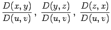

Wenn in einem zusammenhängenden Gebiet drei Funktionen mit den drei Veränderlichen , , R(x,y,z) und ein orientiertes Flächenstück S gegeben sind, dann wird als Oberflächenintegral allgemeiner Art die Summe der Integrale zweiter Art über alle Projektionen bezeichnet:
| (8.162) |
Die allgemeine Formel, mit deren Hilfe man das Oberflächenintegral allgemeiner Art auf das gewöhnliche Doppelintegral zurückführt, lautet:
| (8.163) |
wobei die Größen  und  die oben angegebene Bedeutung besitzen.
die oben angegebene Bedeutung besitzen.
Die vektorielle Darlegung der Theorie des Oberflächenintegrals allgemeiner Art ist im Kapitel Feldtheorie enthalten.